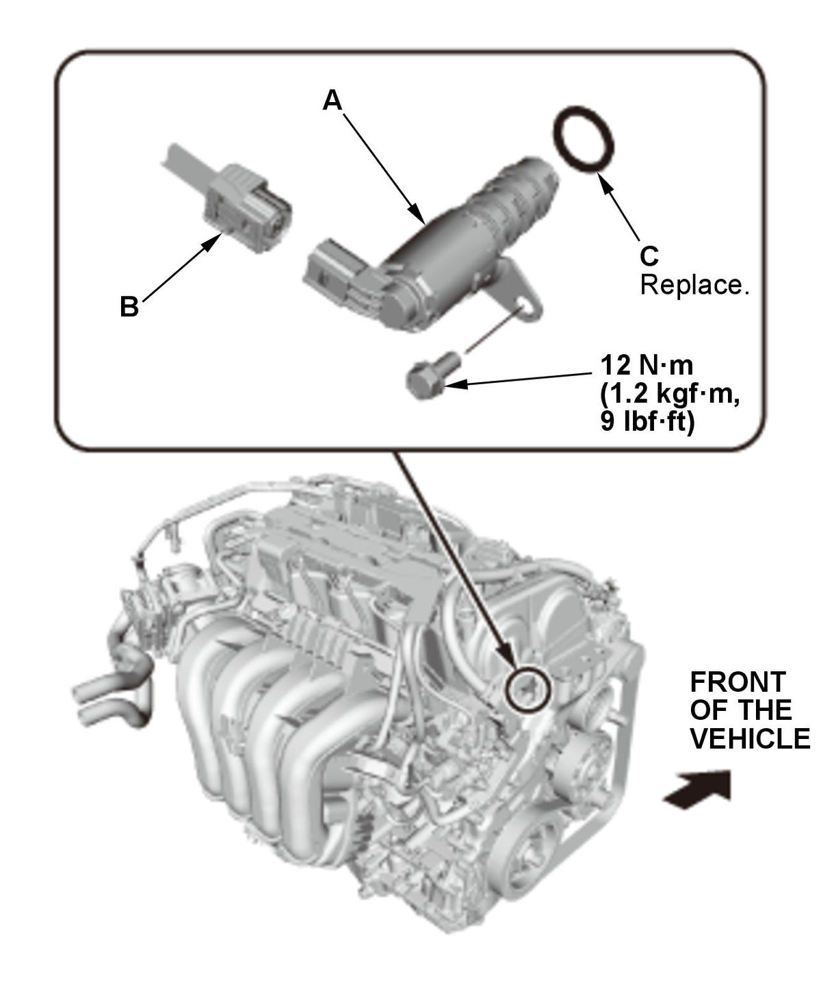
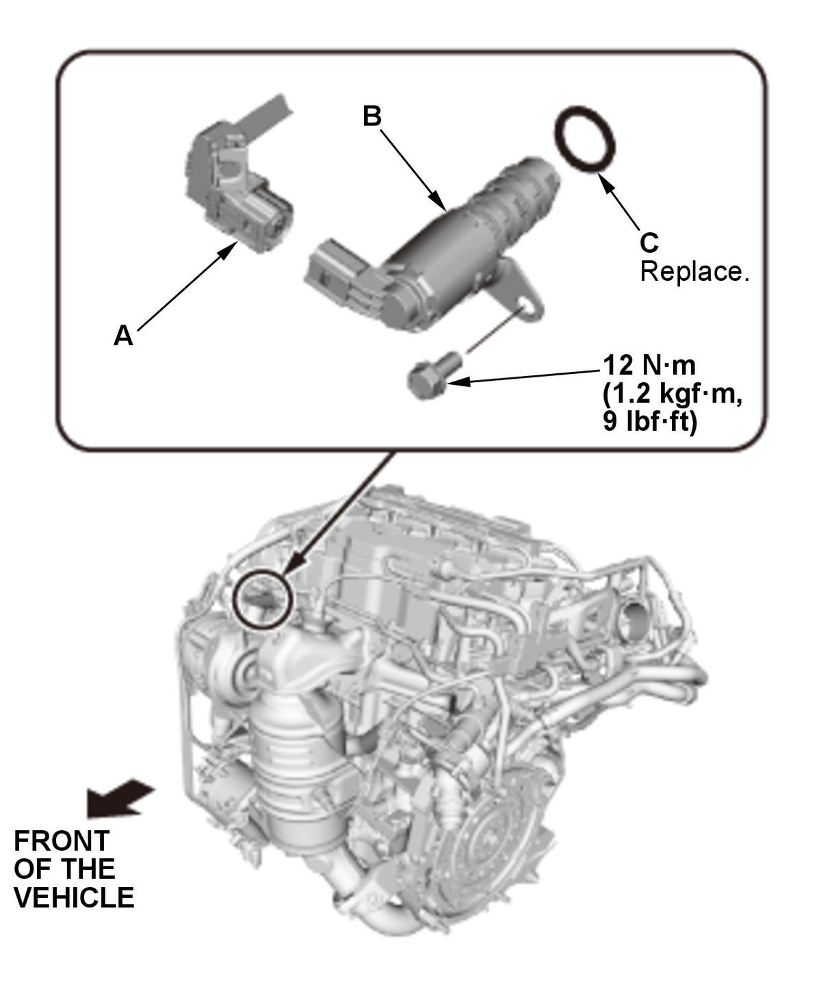

Removal and Installation
Intake Side (VTC Oil Control Solenoid Valve A)
- VTC Oil Control Solenoid Valve A - Remove

Courtesy of HONDA, U.S.A., INC.1. Disconnect the connector (B). 2. Remove VTC oil control solenoid valve A with the O-ring (C).
- All Removed Parts - Install
1. Install the parts in the reverse order of removal with a new O-ring. - Coat the new O-ring with clean engine oil.
- Clean and dry the mating surface of the valve.
Exhaust Side (VTC Oil Control Solenoid Valve B)
- VTC Oil Control Solenoid Valve B - Remove

Courtesy of HONDA, U.S.A., INC.1. Disconnect the connector (A). 2. Remove VTC oil control solenoid valve B with the O-ring (C).
- All Removed Parts - Install
1. Install the parts in the reverse order of removal with a new O-ring. - Coat the new O-ring with clean engine oil.
- Clean and dry the mating surface of the valve.